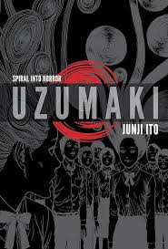

Uzumaki de Junji Ito
La historia sigue a Kirie Goshima y su novio Shuichi, quienes viven en una pequeña ciudad que empieza a ser aterrorizada por una rara obsesión con las espirales.. Los habitantes de la ciudad, poco a poco, empiezan a volverse locos debido a esta obsesión, y sucesos extraños y aterradores comienzan a ocurrir, desde deformaciones físicas hasta fenómenos paranormales. A medida que la espiral se expande, la ciudad se hunde en el caos y la desesperación.